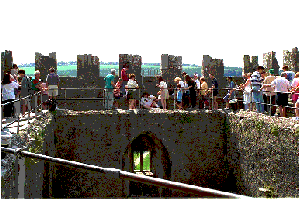

Following the Battle of the Boyne in 1690, all Irish chiefs were stripped of their powers and the McCarthys were again forced to leave Blarney Castle. The Castle was sold to Sir James Jefferyes, Governor of Cork in 1703. The Castle is now owned and managed by the Trustees of the Blarney Castle Estate.
Kissing the Blarney stone The world famous Blarney Stone is situated high up in the battlements of the castle. Follow one of the several long, stone spiral staircases up to the top and enjoy the spectacular views of the lush green Irish countryside, Blarney House and The Village of Blarney.
The stone is believed to be half of the Stone of Scone which originally belonged to Scotland. Scottish Kings were crowned over the stone, because it was believed to have special powers.
|  | The stone was given to Cormac McCarthy by Robert the Bruce in 1314 in return for his support in the Battle of Bannockburn.
Queen Elizabeth I wanted Irish chiefs to agree to occupy their own lands under title from her. Cormac Teige McCarthy, the Lord of Blarney, handled every Royal request with subtle diplomacy, promising loyalty to the Queen without "giving in". Elizabeth proclaimed that McCarthy was giving her "a lot of Blarney", thus giving rise to the legend.
You too can acquire the gift of eloquence by kissing the stone! |
The Rock Close is laid out on a pre-historic Druids site with the remains of huge boulders, rocks, a dolmen (a megalithic tomb with a large flat stone laid on uprights), a sacrificial altar and a witches kitchen. You will also find Japanese bamboo trees, magnolias, Siberian dogwood and weeping willows and a stream which can be crossed via a small pedestrian bridge.
The Arboretum and woodland walks
There are numerous woodland walks on the grounds of the Blarney Castle estate, through which winds the River Martin. In the arboretum you will find colorful displays of copper beach, ornamental pear, southern beech, nothafagus and evergreen oaks. Adjacent to the arboretum, one finds the Belgian Beds planted with hybrid azaleas, and a western red cedar tree from British Columbia.
Blarney House is situated 200m South of Blarney Castle and was completed in 1874. The house is open to the public during the Summer months only. It has been completely restored over the past few years. The house is surrounded by extensive lawns, shrubs, trees, and flower beds. These slope gently towards the lake.
| |BACK - Clock & Bells Shandon: | NEXT - Cork City Gaol - Brief History:| |